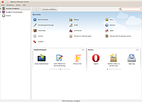

Maverick Meerkat
Der Nachfolger von Lucid Lynx heißt 10.10 „Maverick Meerkat“ („Eigensinniges Erdmännchen“). Diese Version wurde 18 Monate mit Aktualisierungen versorgt. Der Zeitplan wurde auf dem Developer Summit festgelegt.
| Ubuntu 10.10 | |
| Basisdaten | |
| Codename: | Maverick Meerkat |
| Deutsche Übersetzung: | Eigensinniges Erdmännchen |
| Status: | nicht mehr unterstützt |
| Veröffentlichungstermin: | 10. Oktober 2010 (10.10.10) |
| Unterstützt bis: | 10. April 2012 |
| « Zeitleiste » | « 10.04 LTS ... 10.10 ... 11.04 » |
Allgemein¶
Kernel¶
Maverick beinhaltet den Kernel 2.6.35  , welcher u.a. neue Energiesparfunktionen für einige Radeon-Grafikkarten und AMD-Prozessoren mit sich bringt.
, welcher u.a. neue Energiesparfunktionen für einige Radeon-Grafikkarten und AMD-Prozessoren mit sich bringt.
Das Ubuntu Kernel Team lässt ab dieser Kernelversion die Unterstützung für Prozessoren der i586-Generation wegfallen. Dazu zählen beispielsweise der Intel Pentium (I), AMD K5, K6 und ältere Geode-CPUs. Ob der eigene Prozessor noch unterstützt wird, kann unter Ubuntu mit folgendem Befehl herausgefunden werden:
grep -om1 cmov /proc/cpuinfo
Erfolgt eine Ausgabe, unterstützt der Prozessor die Instruktion CMOV (Conditional Move) und kann mit dieser Kernelversion betrieben werden. Liefert der Befehl keine Antwort, ist das ältere Ubuntu 10.04 eine Alternative.
Installation¶
Der Installer "Ubiquity" wurde neu organisiert, sodass die Installation zum Vergleich zum Lucid Lynx schneller durchläuft. Er bietet auch ein neues, übersichtlicher gestaltetes Partitionswerkzeug. Dieses wurde an den Anfang des Installationsprozesses gesetzt, um die Installationszeit zu reduzieren. Während die Festplatte partitioniert und Dateien kopiert werden, gibt man weitere Informationen wie Zeitzone, Benutzername etc. ein. Nachteilig ist, dass bei Notebooks nun zwingend die Stromversorgung über Netzteil und eine Internet-Verbindung hergestellt sein müssen, bevor die Installation gestartet werden kann.
Neu ist ein Kästchen, welches schon bei der Installation von Ubuntu proprietäre Software aktiviert, dazu zählt die Unterstützung von WLAN-Geräten oder der MP3-Wiedergabe.
btrfs¶
Bei der Installation lässt sich jetzt optional auch das neue, aber noch im Entwicklungsstatus befindliche Dateisystem btrfs auswählen - Anwendern wird aber noch von dessen Benutzung abgeraten. Die Auswahl der Partitionierungsoptionen geschieht nun schon am Anfang des Installationsprozesses, direkt nach der Auswahl der Sprache.
Multi-Touch¶
Canonical begann die Arbeit an der Multi-Touch-Unterstützung mit Ubuntu 10.04. Multi-Touch wird zur Bedienung und Steuerung von Anwendung mittels Gesten auf einem Touchscreen verwendet. In Maverick unterstützen etliche Gtk-Programme das gestenbasierende Scrollen. In der Ubuntu Netbook Edition können beim Fenstermanagement Gesten verwendet werden (weitere Informationen  ).
).
Ubuntu (GNOME)¶
|  |
| Ubuntu Software-Center |
Neu ist unter anderem das Fotoprogramm Shotwell, das F-Spot ersetzt. Des Weiteren wurde natürlich auch schon vorhandene Software aktualisiert. GNOME verwendet Version 2.32, welche nach der derzeitigen Planung die letzte 2.x-Version (mit Ausnahme eines Maintenance-Releases zur Fehlerbeseitigung) sein wird. Evolution wurde auf Version 2.30 aktualisiert und soll eine bessere Performance bieten als die Version in Karmic Koala. Wie bereits in vergangenen Ubuntu-Veröffentlichungen wurden wieder das Software Center und die Integration des Onlinespeicher-Services Ubuntu One überarbeitet. Neu ist auch die Funktion, Schriftarten über das Software Center zu installieren.
Die Netbook Version kommt nun standardmäßig mit der neuen Oberfläche Unity.
Kubuntu (KDE)¶
Es ist KDE SC 4.5.1 enthalten, welche auf das Ende September erschienene Qt 4.7 aufbaut. Eine bisher extra veröffentlichte Netbook Variante der KDE-Version fällt weg, da die neue Plasma Netbook Shell automatisch bei der Installation auf entsprechenden Geräten gestartet wird, bzw. beim Login die gewünschte Variante ausgewählt werden kann. KPackageKit bringt ein schnelles Backend mit und die grafische Oberfläche wird um eine Kategorienanzeige ("Multimedia", "Spiele", etc.) erweitert.
Rekonq¶
Der seit KDE 2 existierende Konqueror, welcher bisher den Standard-Webbrowser darstellte, wird in Kubuntu 10.10 durch den modernen und schlanken rekonq ersetzt. Rekonq basiert auf Qt WebKit. Natürlich kann auch Konqueror bei Bedarf weiter verwendet werden.
BlueDevil¶
Nach der Portierung von KBluetooth von KDE 3.x auf KDE 4 funktionierte für viele Benutzer die Bluetoothschnittstelle des Öfteren gar nicht oder nur schlecht. Zwar wurden Anfang 2010 viele Fehler behoben und die grundlegenden Funktionen konnten wieder ohne größere Probleme verwendet werden, doch es wurde auch wieder ziemlich schnell ruhig um das Projekt. Mitte des Jahres wurde verkündet, dass KBluetooth nicht mehr weiter entwickelt werden soll. Stattdessen wurde die Neuentwicklung BlueDevil ins Leben gerufen, welche sich wieder nahtlos in den KDE-Desktop einfügt. Aus diesem Grund macht KBluetooth in Kubuntu 10.10 platz für BlueDevil. Weitere Informationen zu BlueDevil gibt es hier .
PulseAudio¶
Nachdem Ubuntu und Xubuntu bereits seit Hardy Heron den erweiterten Soundserver PulseAudio standardmäßig verwenden, so kommt dieser nun erstmals in Kubuntu 10.10 als Standard-Soundserver zum Einsatz.
Xubuntu (Xfce)¶
Xubuntu erscheint mit der aktuellen Xfce4-Version 4.6.3 und trennt sich von zwei GNOME-Anwendungen: der Xfce-Medienplayer Parole ersetzt Totem, statt Brasero wird nun Xfburn verwendet. Des Weiteren wird der GNOME-Task-Manager durch den Xfce4 Process Manager ausgetauscht.
Lubuntu (LXDE)¶
Lubuntu ist weiterhin keine offizielle Variante von Ubuntu. Allerdings macht die Neuentwicklung von PCManFM weiter Fortschritte. So ist jetzt der Zugriff auf Netzwerkfreigaben integriert. Außerdem gibt es jetzt ein eigenes Paket lubuntu-restricted-extras.
Folgende Standard-Programme wurden ersetzt oder ergänzt:
Links¶
Ubuntu 10.10 wird „Maverick Meerkat“ („Rebellisches Erdmännchen“) heißen auf Ikhaya
Zeitplan für Ubuntu 10.10 veröffentlicht auf Ikhaya
Blogeintrag
von Mark Shuttleworth zu Maverick

- Erstellt mit Inyoka
-
 2004 – 2017 ubuntuusers.de • Einige Rechte vorbehalten
2004 – 2017 ubuntuusers.de • Einige Rechte vorbehalten
Lizenz • Kontakt • Datenschutz • Impressum • Serverstatus -
Serverhousing gespendet von